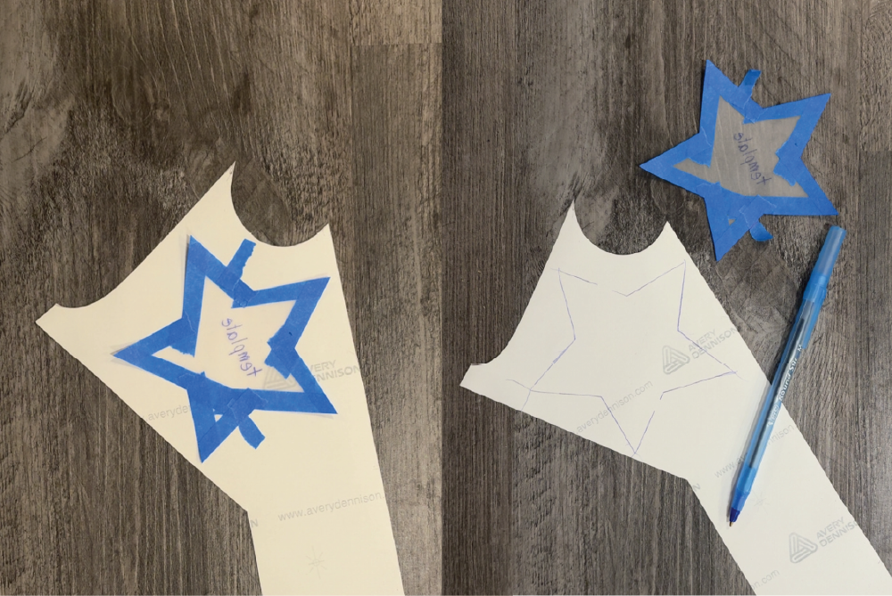

The next step is to place your template on the back side of your vinyl sheet. Use small pieces of tape to hold the template in place and prevent it from shifting while you trace. Carefully trace around the entire shape, making sure to capture all of the details and outlines of your design before moving on to the cutting process.